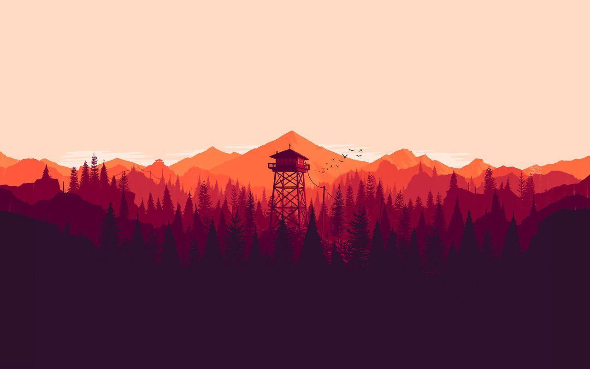

El ver y capturar paisajes ya sea en fotos, videos o solo en tu mente es sin duda uno de los pasatiempos mas relajantes y hermosos del mundo. El paisajismo no solo es ver un lugar y ya, es saber apreciar cada momento, la belleza, la calma...
En este video se puede llegar a apreciar un paisaje... Sin duda alguna... Precioso, invaluable, perfecto. Observa los paisajes y aprecialos.